Saint Petersburg Guide
Discover the most interesting attractions
About City
In this guide, we will tell you about the most interesting places in Saint Petersburg that you should definitely visit when traveling to this wonderful city.
History
May 16 (27 new style) 1703 1
Founding of Saint
Petersburg by Peter the Great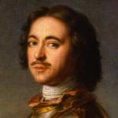
May 21, 1712 2
Saint Petersburg becomes the official capital of Russia
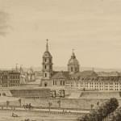
1914 3
Renaming to
Petrograd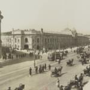
1918 4
Transfer of capital from
Petrograd to Moscow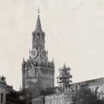
January 26, 1924 5
Renaming Petrograd to Leningrad in honor of V.I. Lenin
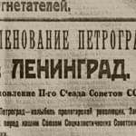
September 8, 1941
— January 27, 1944 6Siege of Leningrad by Finnish and German forces
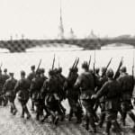
May 8, 1965 7
Leningrad receives the status of a Hero City
September 6, 1991 8
The city returns to its former name Saint Petersburg by decree of the Presidium of the Supreme Council of the RSFSR
September 22, 2012 9
Birth of the 5 millionth resident of Saint Petersburg
Attractions
Saint Petersburg is a city known for its beautiful buildings, museums and parks. It is one of the most beautiful cities in Russia, attracting millions of tourists every year. In this article, we will tell you about the most famous attractions of Saint Petersburg.
Hermitage
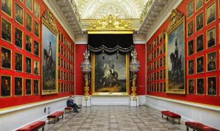
The Hermitage is one of the most famous museums in the world, located in the heart of Saint Petersburg. It is a huge museum with more than 3 million exhibits, including works of art, ancient sculptures, ancient coins and much more. The museum building itself is an attraction - a huge palace with white columns and golden decorations.
Palace Square
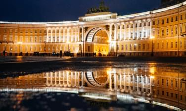
Palace Square is the central square of Saint Petersburg, which is home to some of the city's most famous attractions, such as the Winter Palace, the Hermitage and the Alexander Column.
The square is surrounded by beautiful buildings and columns, and is also a place for various celebrations and events.
Winter Palace
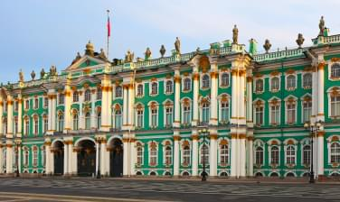
The Winter Palace is one of the most beautiful and famous palaces in Russia. It was built in the XVIII century for the imperial family and is located on Palace Square. Today, the Winter Palace building houses the Hermitage.
Peterhof
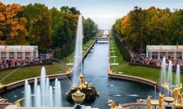
Peterhof is a famous palace and park complex located on the coast of the Gulf of Finland. It was founded by Peter the Great in the early XVIII century and is one of the most beautiful and famous attractions of Saint Petersburg. Peterhof contains numerous fountains, sculptures and palaces.
St. Isaac's Cathedral
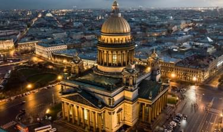
St. Isaac's Cathedral is one of the most beautiful and majestic temples of Saint Petersburg. It was built in the XIX century and is one of the symbols of the city. The cathedral is decorated with domes, columns and mosaics, and is also one of the highest churches in the world.
Travel Budget
Before your trip, you need to estimate approximately how much budget you will need for your travel.
Accommodation
from $24Average restaurant bill
$16Excursions
from $12Souvenirs
from $4